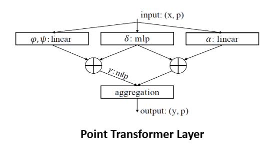
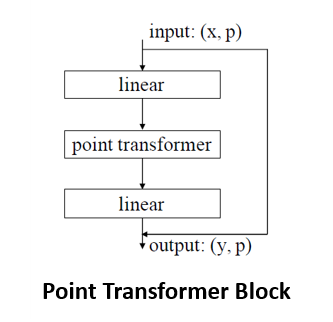
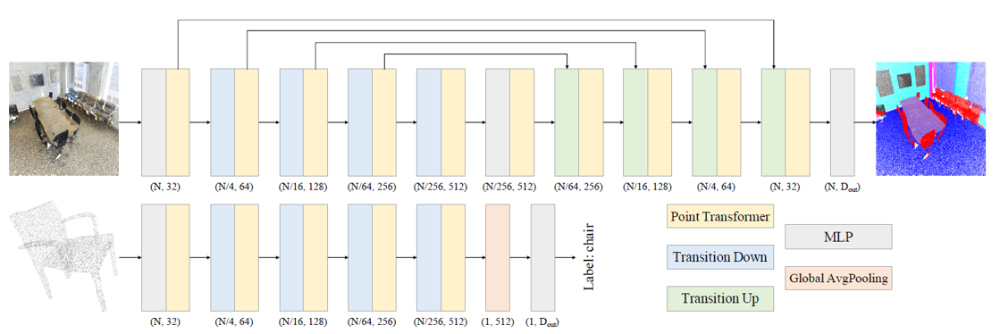
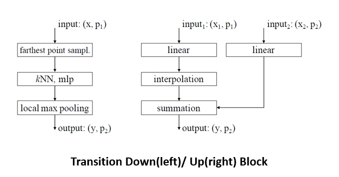
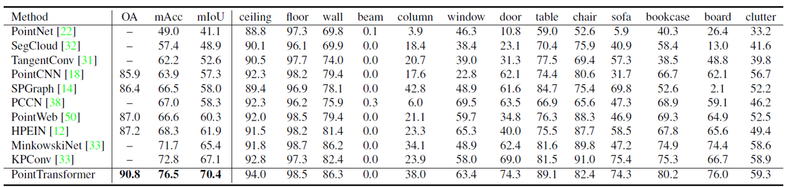
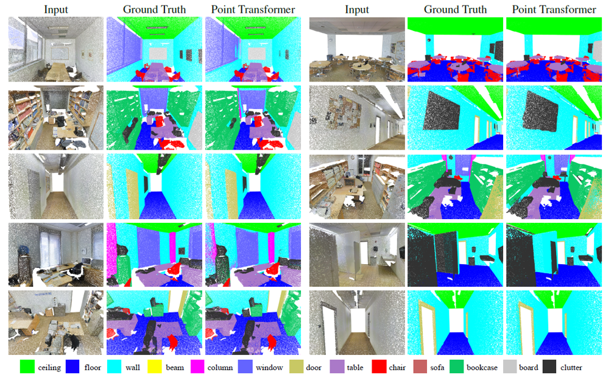
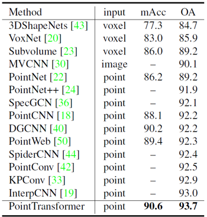
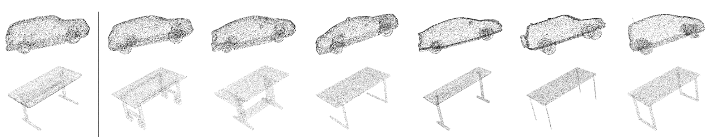
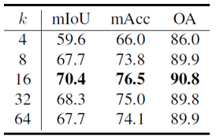
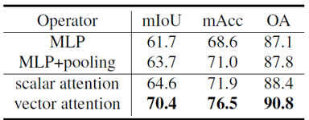

Point Transformer 리뷰
원문 : Zhao, Hengshuang, et al. “Point transformer.” arXiv preprint arXiv:2012.09164 (2020).
오늘 소개드릴 논문은 2020년 발표된 Point Transformer 논문에 대한 리뷰입니다.
Transformer 구조는 Natural language processing(NLP) 분야에서 처음 소개된 이후로, NLP 뿐만 아니라 object classification 및 detection 등 다양한 task에 적용되어 뛰어난 성능을 보여주고 있습니다.
Point Transformer는 point cloud classification 및 segmentation task에 transformer 구조를 적용한 논문인데, 구체적으로는 self-attention 연산을 이용해서 feature를 추출하였습니다. Transformer의 self-attention mechanism은 permutation-invariant한 특성을 가지고 있기 때문에 point cloud 형태의 데이터에 바로 적용할 수 있습니다.
논문에서는 이런 self-attention layer를 이용해서 U-net 형태의 구조를 가진 네트워크를 형성하였습니다. 그럼 구체적으로 Point Transformer가 어떤 구조로 구성되어 있는지 설명드리겠습니다. (Transformer 또는 self-attention에 대한 이해가 부족하신 분들은 Attention is all you need 리뷰를 보고 오시면 좋습니다.)
Point Transformer Layer

Point Transformer network에서는 point transformer layer를 정의하고, 이를 통해 점들 간의 관계를 고려한 feature vector를 multi-scale로 추출해주었습니다. 이는 vector-based self-attention 연산에 기반을 두고 있는데, scalar-based 와 vector-based self-attention 은 attention 값의 형태가 scalar인지 vector인지에 따라 구별됩니다. Vector-based self-attention의 경우에는 attention vector가 feature vector와 같은 크기로 정해져서, elementwise 곱을 통해서 최종 output vector를 얻게 됩니다.
Self-attention 연산은 기본적으로 set operator 이기 때문에, set 형태의 구조를 가진 point cloud 연산에 특화되어 있습니다. 이러한 점을 활용하여 논문에서는 point cloud에 특화된 self-attention layer를 구성하였습니다. 구조는 생각보다 간단합니다. 기준이 되는 한 점과 그에 인접한 k개 점들의 feature vector를 얻어, 기준점과 인접점들 간의 상대적인 feature의 차이를 계산합니다. 이렇게 얻은 상대적인 feature vector들은 MLP layer를 통해서 얻은 attention score와 곱해집니다. 이후 인접한 점들의 모든 attention-weighted feature vector를 더해서 최종 output vector를 얻게 됩니다.
기본적으로 point transformer layer에서 얻은 output vector는, input으로 이용한 point cloud와 같은 수의 점들로 구성되어 있으며, 그 차원은 중간에 존재하는 MLP 또는 linear layer의 input/output size에 따라 달라질 수 있습니다. 따라서 별다른 처리 과정 없이 여러 layer들을 이어붙일 수 있고 up/down-sampling layer를 이용해서 U-Net 형태의 구조를 가진 network를 구성할 수도 있습니다.
또한 특이한 점은, 기존의 transformer처럼 attention을 계산할 때 global한 모든 점을 이용하는 것이 아니라, 각 기준점에 인접한 k개의 점들만 이용한다는 점입니다. 아마 모든 점들을 넣게 되면, 인접점의 개수가 늘어나 중심점과의 관계를 고려한 attention score를 제대로 학습할 수 없고, 계산량에 따른 학습 시간도 과도하게 늘어나기 때문이 아닐까 생각됩니다. 논문에서는 모든 점을 이용한 경우에, 중심점과 거리가 먼 점들에 대한 attention score가 오히려 noise로 작용해서 성능을 떨어트렸다고 이야기하고 있습니다.

Point transformer block은 위에서 설명드린 point transformer layer의 전후에 feature vector의 차원 조정을 위한 linear layer와 residual connection이 추가된 구조로 구성되었습니다. Point transformer block은 인접한 점들의 특징 정보를 통합하는 역할을 하며, 추후에 설명드릴 point transformer network의 구성 요소로 이용됩니다.
Positional Encoding
기존의 Transformer에서는 문장 내 단어들의 순서를 나타내기 위해 각 embedding vector에 positional encoding vector를 더해주었습니다. Point transformer에서도 마찬가지로 위치 정보를 더해주었는데, 각 점의 위치를 나타내는 xyz 좌표값을 활용하여 positional encoding vector를 생성하였습니다.
Positional encoding vector는 xyz 좌표값을 2개의 linear layer와 하나의 ReLU로 구성된 MLP에 통과시켜 얻었습니다. Point transformer layer는 self-attention 연산 중간중간에 positional encoding vector를 더해줌으로써 인접한 점들 간의 위치 관계와 구조를 output vector에 반영하였습니다.
Point Transfomer Network
Point transformer network는 앞서 설명드린 point transformer block과 pooling layer 등으로 구성되었습니다. Continuous convolution이나 graph convolution 등 기존 연구들에서 point cloud segmentation을 위해 사용했던 연산은 일절 활용되지 않았습니다.

전체적인 구조는 위의 그림과 같습니다. Image segmentation 분야에서 주로 사용되는 U-Net 구조와 유사한데, down-sampling과 up-sampling 과정을 통해 여러 크기의 point set에서 정보를 추출하였습니다. 또한 같은 크기의 point set들은 residual connection으로 연결해주었습니다.

위의 그림에서 왼쪽에 보이는 down-sampling layer는 네트워크에서 point set의 크기를 줄여주는 역할을 담당합니다. 이 때, 서로 간의 거리가 가장 먼 점들을 sampling하는 farthest point sampling 알고리즘을 이용하였습니다. Sampling 과정을 통해 얻은 점들의 feature vector는 인접한 점들의 feature vector에서 local하게 max-pooling 연산을 수행해서 얻었습니다. 오른쪽의 up-sampling layer는 줄어든 point set의 크기를 이전의 크기로 키워주는 역할을 담당합니다. 특히, segmentation task의 경우에 최종적으로 모든 점들에 대한 label을 얻어야 하기 때문에 필수적입니다. Up-sampling layer는 interpolation block과 skip-connection으로 구성되었습니다.
네트워크의 마지막 부분에서는 여러 linear layer들로 구성된 MLP를 통해 feature vector의 차원을 조정해주었습니다. 마지막 layer로부터는 label 개수만큼의 차원을 가지는 classification logit을 추출해서 class 정보를 예측하였습니다.
Experiments
Point Transformer Network의 classification / segmentation 성능을 측정하기 위해 다양한 실험을 진행했습니다. ModelNet40, ShapeNet, S3DIS 등의 대표적인 dataset을 이용하여 성능을 평가했습니다. 결과는 대부분 SOTA!를 달성했습니다. 다만 공식적으로 code 및 model이 공개되지 않았고, 때문에 정확한 reproduction 및 평가 결과가 확인되지 않는 것이 아쉬웠습니다.
- Semantic Segmentation

S3DIS dataset을 이용해서 실내 환경에 대한 semantic segmentation 성능을 평가하였습니다. Area 5를 제외한 나머지로 모델을 학습하고, Area 5로 모델을 평가하였습니다. mIOU 및 OA가 70.4%, 90.8%를 기록하며 SOTA의 성능을 보여주었습니다. (기존에 KPConv에서 달성한 SOTA 성능을 뛰어넘었습니다.)

위의 그림은 결과를 시각화한 것인데, 의자의 다리 등 detail한 부분까지도 잘 classification 하는 것을 볼 수 있습니다.
- Shape Classification

ModelNet40 dataset을 이용해서 shape classification 성능을 평가하였습니다. 기존 dataset에서 점들을 1024개 정도로 sub-sampling하여 input으로 활용하였습니다. 마찬가지로 graph convolution 기반의 방법들이나, continuous convolution 기반의 KPConv를 제치고 SOTA의 성능을 달성하였습니다.

Point transformer network를 통해서 나온 최종 embedding vector의 타당성을 보이기 위해, 임의의 물체의 embedding vector와 거리가 가까운 embedding vector들의 원래 모습을 검색해보았습니다. 위의 그림에서 알 수 있듯 차에 대한 embedding들이 서로 가깝고, 책상에 대학 embedding이 가깝게 잘 mapping되는 것을 확인할 수 있었습니다.
Ablation studies
그 외에 몇 가지 간단한 ablation study를 진행했습니다. 우선 주변 몇 개의 점들까지 neighboring point로 볼 것인가에 대한 k 값을 바꿔가면서 결과를 비교했습니다.

k 값을 16으로 두었을 때 가장 성능이 좋았습니다. k 를 4나 8 정도로 두면, 주변의 구조나 관계에 대한 정보가 부족해서 학습 성능이 충분히 나오지 않는 것으로 보였습니다. 반면에 k 를 32나 64 정도로 크게 잡으면, 너무 많은 점들이 들어오게 되어 연관성이 없는 점들이 noise로 작용하고, 결국 정확도를 떨어트렸습니다.

또한 self-attention 연산의 종류에 대해서 실험했습니다. 논문에서는 vector-based attention을 기준으로, 아예 attention을 사용하지 않았을 때(MLP, MLP + pooling)와 scalar-based attention을 사용했을 때의 결과를 비교했습니다. Vector-based self-attention을 이용했을 때 전반적인 성능이 가장 잘 나왔는데, feature vector의 각 channel이 이론적으로는 서로 independent하기 때문에 각각에 맞는 attention weight를 가해줄 수 있을 때 feature 변환이 가장 효율적으로 이뤄지는 것으로 설명했습니다.
Summary
Point transformer는 point cloud를 transformer 구조를 이용해서 다룬 초창기 논문인데도 graph convolution, continuous convolution 기반의 논문들을 제치고 SOTA의 성능을 달성하였습니다. Point cloud가 set 형태의 data이기 때문에, 그에 맞는 set operator를 이용했을 때 성능이 월등하게 잘 나오지 않았나 싶습니다. Transformer 구조를 적용한 초창기 연구이기 때문에 추후에 더 뛰어난 model들이 많이 발표되지 않을까 생각됩니다. 개인적인 바람으로는 official code를 공개해주었으면 좋겠습니다.
그럼 이만 마무리하겠습니다. 궁금하거나 잘못된 점이 있다면 댓글 부탁드리겠습니다. 읽어주셔서 감사합니다 :)
참고 문헌 및 출처